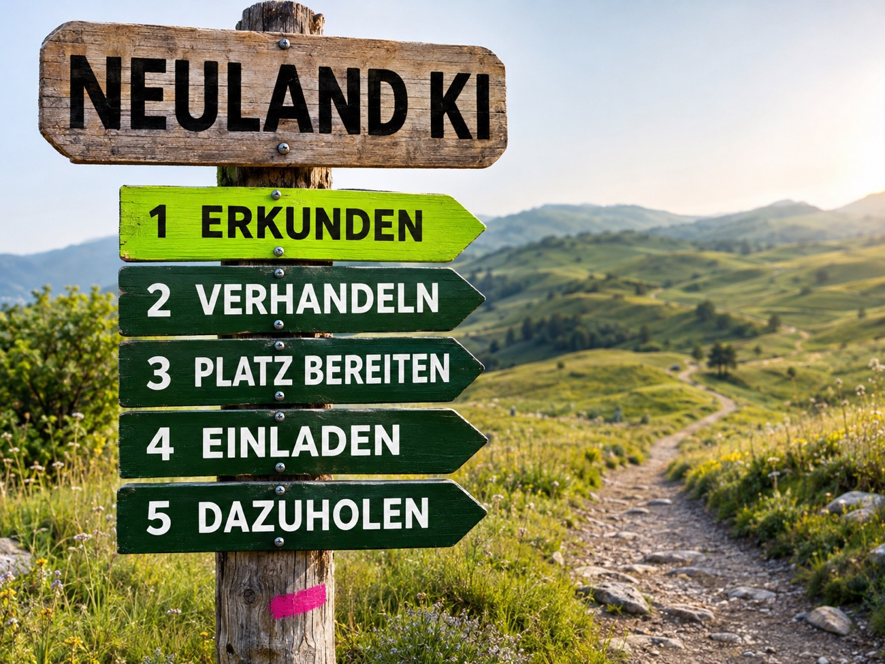
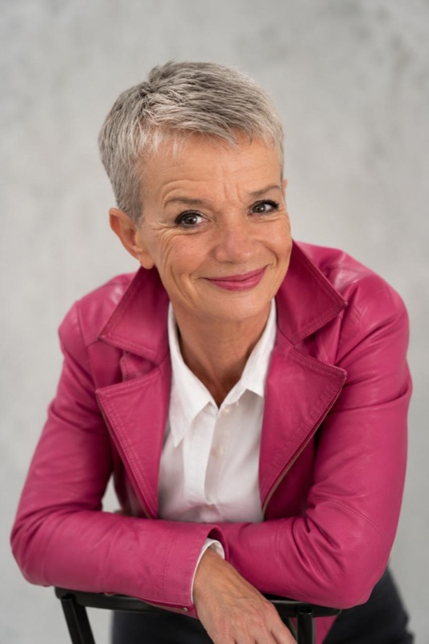
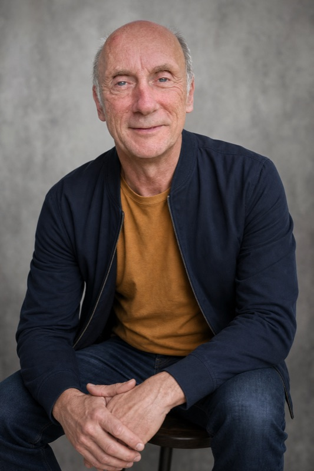
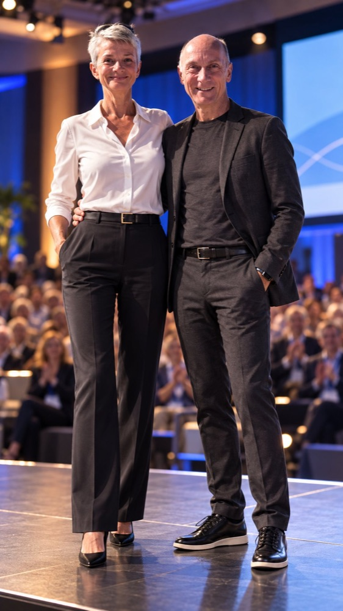

Die KI-Lernreise für Führungskräfte
Das neue Land heißt KI.
Eine Lernreise für die Führungskräfte Ihres Unternehmens, bei Ihnen im Haus. Dort lernen sie, selbst mit KI-Assistenten, Agenten und Vibe Coding zu arbeiten. Sie finden heraus, was diese Technik für ihren Bereich bedeutet, und können ihre Teams danach sicher hindurchführen.
Warum „Neuland“? KI ist kein weiteres Tool. Sie ist ein Gebiet voller neuer Fähigkeiten, ein Capability Space. Wer dort führen will, muss es selbst betreten haben. Darum geht es auf dieser Lernreise.

Max. 10 Plätze
je Gruppe.
Ausgangslage
KI ist im Unternehmen angekommen. Jetzt geht es um Führung.
In vielen Unternehmen ist ein KI-Assistent zugelassen, aber nur ein Teil der Belegschaft nutzt ihn wirklich. Gleichzeitig gehen in den nächsten Jahren viele erfahrene Mitarbeiter in Rente, und nicht jede Stelle lässt sich nachbesetzen. Kompetenzen werden sich verschieben, nicht unbedingt der Headcount.
Viele Führungskräfte spüren, dass hier etwas Großes passiert. Was es für ihren eigenen Bereich bedeutet, wissen die wenigsten. Eine weitere Tool-Schulung ändert daran nichts. Was hilft, ist eigene Erfahrung.
Heute
- KI ist da, aber viele Führungskräfte wissen nicht, was sie wirklich kann und wo sie scheitert.
- Was Mitarbeiter mit KI erarbeiten, können Führungskräfte schwer einschätzen.
- KI gilt als weiteres Werkzeug, nicht als Veränderung von Arbeit und Rollen.
- Unsicherheit: Was darf ich, was soll ich, was passiert mit meinen Aufgaben?
Nach der Lernreise
- Die Führungskräfte haben selbst mit Modellen, Assistenten und Agenten gearbeitet und kennen Stärken und Grenzen aus erster Hand.
- Sie erkennen in ihrem Bereich, wo Routine bleibt, wo Expertise zählt und wo sich Experimente lohnen.
- Sie ziehen mit ihren Teams klare Grenzen: Das machen wir, das lassen wir.
- Sie gehen offen mit der Veränderung ihrer eigenen Rolle um.
Unser Ziel
Nach der Lernreise kennen die Führungskräfte das neue Land KI aus eigener Erfahrung. Sie wissen, wo in ihrem Bereich Routine, Expertise und Experiment hingehören, und sie bringen ihre Teams sicher durch dieses Gelände.
Unser Maßstab: Wenn danach zwei von drei Führungskräften Dinge neu denken, ist viel gewonnen.
Was die Teilnehmenden mitnehmen
Sechs Dinge, die nach der Lernreise in jeder Abteilung ankommen.
Ein neues Bild von KI
KI ist kein Tool unter vielen, sondern ein Capability Space. Die Führungskräfte wissen, was Modelle, Assistenten, Agenten und Skills leisten und wofür welches taugt.
Eigene Praxis statt Vorführung
Sie haben selbst Agenten Aufgaben übergeben, einen eigenen Chatbot eingerichtet und per Vibe Coding ein kleines Werkzeug gebaut.
Urteilskraft
Sie schätzen ein, was hinter einem KI-Ergebnis steckt: Qualität, Aufwand, Halluzination. Das Konzept, das angeblich vier Wochen dauert, sehen sie mit neuen Augen.
Ein Blick auf den eigenen Bereich
Sie wissen, welche Prozesse, Aufgaben und Services in ihrem Bereich sich durch KI verändern können, vom Kundenservice bis zur Verwaltung.
Klare Grenzen für das Team
Innerhalb der Vorgaben des Hauses legen sie fest, was in ihrem Team mit KI gemacht wird und was nicht, und können es begründen.
Führen mit Zielen und Kontext
Wer einer KI klare Ziele und guten Kontext gibt, bekommt bessere Ergebnisse. Diese Erfahrung übertragen sie auf ihre Teams.
Chatten war 2023.
In jedem Modul spielt KI die zentrale Rolle. Und zwar in Ihren Händen.
Das ist keine Tool-Schulung. Wir führen nichts vor, Sie wenden an. Und zwar nicht mit ein paar kleinen Übungen: Wir machen nicht nur die Zehen nass, sondern gehen bis zum Hals ins Wasser und tauchen auch einmal unter. Wer seine Mitarbeiter im Umgang mit KI führen will, muss selbst wissen, wie es sich anfühlt.
Die Lernreise
Fünf Etappen ins neue Land.
Gruppen durchlaufen die bekannten Phasen der Teamentwicklung: Forming, Storming, Norming, Performing und darüber hinaus. Das passiert auch mit KI als neuem Gruppenmitglied. Die Etappen sind kein Terminplan. Wir verteilen sie flexibel auf Präsenztage und Online-Termine, so wie die Gruppe vorankommt.
Diese Phasen erleben Sie dreifach:
Etappe 1 · Forming
Erkunden
Ich und das neue Land
Was kann KI heute wirklich, und wo scheitert sie? Die Führungskräfte betreten das Gelände selbst, ohne Vorwissen vorauszusetzen. Sie lernen sich als Gruppe kennen und merken schnell: Unsicher sind alle, und das ist in Ordnung.
So arbeiten Sie mit KI
- Sie geben einem KI-Assistenten eine echte Aufgabe aus Ihrem Alltag. Erst wie gewohnt, dann mit Rolle, Ziel und Kontext. Und vergleichen.
- Sie übergeben einem Agenten eine Rechercheaufgabe und verfolgen, wie er plant, sucht und ein Ergebnis baut.
- Die KI interviewt Sie zu Ihrer eigenen Rolle: Welche Ihrer Aufgaben könnte sie übernehmen, welche nicht?
Für Ihr Team
Wie erleben Ihre Mitarbeiter den Start mit KI? Was brauchen sie in dieser ersten Phase von Ihnen?
Staunen
Der Moment, in dem ein Agent in Minuten erledigt, wofür man sonst einen Nachmittag einplant.
Etappe 2 · Storming
Verhandeln
Wer darf was, und warum?
Jetzt kommen die Reibungen auf den Tisch: Datenschutz, Kontrolle, Sorge um Aufgaben und Stellen, Fehler der KI. Wir lassen diese Konflikte bewusst zu, denn genau sie entscheiden später im Team, ob KI ankommt.
So arbeiten Sie mit KI
- Sie bringen die KI gezielt zum Halluzinieren und lernen, Fehler zu erkennen.
- Sie prüfen ein KI-erstelltes Konzept: Wie viel Arbeit steckt dahinter, was ist Substanz, was Fassade?
- Die KI greift Ihren Standpunkt als Advocatus Diaboli an. Sie verteidigen ihn oder ändern ihn.
- Erste Regeln für KI in Ihrem Bereich, innerhalb der Vorgaben des Hauses.
Für Ihr Team
Auch Ihr Team wird über KI streiten. Sie wissen dann, wie sich das anfühlt, und können es moderieren statt unterdrücken.
Staunen
Wie überzeugend falsche Antworten klingen können, und wie schnell man lernt, sie zu durchschauen.
Etappe 3 · Norming
Platz bereiten
Meine Rolle im neuen Land
Was ist meine Aufgabe als Führungskraft, wenn KI einen Teil der Arbeit übernimmt? Die Gruppe findet gemeinsame Maßstäbe. Jede Führungskraft klärt, wie sie künftig Rahmen setzt, statt jeden Schritt zu kontrollieren.
So arbeiten Sie mit KI
- Sie richten einen eigenen Custom Chatbot oder Skill für eine wiederkehrende Aufgabe ein.
- Dabei merken Sie, wie viel Klarheit über Ziel, Kontext und Qualität es braucht.
- Genau diese Klarheit brauchen auch Ihre Mitarbeiter. Sie übertragen die Erfahrung auf ein echtes Führungsthema.
- Die KI ist Sparringspartner für ein schwieriges Gespräch.
Für Ihr Team
Sie formulieren, welchen Rahmen Ihr Team für die Arbeit mit KI bekommt und wo es selbst entscheidet.
Staunen
Ihr eigener Chatbot beantwortet die erste Anfrage, so wie Sie es gewollt haben.
Etappe 4 · Performing
Einladen
Mein Verantwortungsbereich
Jetzt geht es um den eigenen Bereich: Prozesse, Aufgaben, Services. Wo bleibt Routine Routine, wo ist Expertise gefragt, wo lohnt ein Experiment? Die Führungskräfte laden KI gezielt in ihren Bereich ein und denken das Geschäft neu.
So arbeiten Sie mit KI
- Vibe Coding: Sie bauen ohne Programmierkenntnisse einen kleinen Prototyp für ein Problem aus Ihrem Bereich.
- Ein Agent analysiert einen Ihrer Prozesse und schlägt Varianten vor. Sie bewerten, was taugt.
- Beispiel Kundenservice: Wie könnte KI ein Serviceteam sinnvoll unterstützen, und was bleibt Aufgabe von Menschen?
- Beispiel Verwaltung: Welche wiederkehrenden Vorgänge kann ein Agent vorbereiten, und wer prüft und entscheidet?
Für Ihr Team
Sie nehmen eine konkrete Idee mit, die Ihr Team ausprobieren kann, und wissen, wie Sie es dabei begleiten.
Staunen
Ein funktionierender Prototyp, gebaut an einem Nachmittag, von jemandem, der nie programmiert hat.
Etappe 5 · Expanding
Dazuholen
Team, Nachbarn, Zukunft
Kein Bereich erschließt das neue Land allein. Die Führungskräfte suchen Verbündete über Bereichsgrenzen hinweg, holen ihre Teams dazu und planen, wie es nach der Lernreise weitergeht.
So arbeiten Sie mit KI
- Sie stellen Ihre Prototypen und Ideen anderen Führungskräften vor und finden gemeinsame Anwendungsfälle.
- Mit KI entwickeln Sie Ihre Lotsenkarte für das Team: Was ist drin, was draußen? Was können wir, was wollen wir, was lassen wir besser?
- Die KI hilft, die Lernreise auszuwerten und die nächsten Schritte festzuhalten.
Für Ihr Team
Ab jetzt sind Sie selbst die Pioniere: Sie gehen mit Ihrem Team die Etappen, die Sie hier erlebt haben.
Staunen
Wie viele gute Ideen in 10 Köpfen stecken, wenn man sie zusammenbringt.
Ein Faden durch alle Etappen: Was macht KI mit meiner eigenen Rolle? Darüber sprechen wir ehrlich, ohne zu dramatisieren. Und wir lassen Raum für unterschiedliche Wege: Nicht jede Führungskraft muss selbst Werkzeuge bauen. Aber alle sollen verstehen, was möglich ist.
Das detaillierte Programm erstellen wir nach den ersten Sondierungsgesprächen. Dann wissen wir, wo Ihre Führungskräfte und Ihr Unternehmen beim Thema KI stehen und welche Werkzeuge genutzt werden dürfen.
Wer was tut
Drei Rollen, eine Reise.
Geschäftsführung, IT und KI-Verantwortliche
Landvermesser
Sie ziehen die großen Grenzen: Welche Werkzeuge, welche Daten, welche Regeln gelten im Haus? Sie geben der Lernreise Rückendeckung.
Ihre Führungskräfte
Siedler
Sie machen sich das neue Land zu eigen, in zwei Rollen:
Andrea Kaden und Ralf Westphal
Pioniere
Wir gehen voran und bringen Erfahrung aus vielen anderen Unternehmen mit, auch aus unseren Fehlern. Und wir ziehen weiter, wenn die Führungskräfte sicher unterwegs sind.
Und dann?
Am Ende der Lernreise sind die Führungskräfte selbst Pioniere: Sie gehen mit ihren Teams voran, so wie wir mit ihnen.
Methode
So arbeiten wir.
Fünf Prinzipien tragen die Lernreise, in jeder Gruppe und in jedem Termin.
Auch bei höchstens 10 Teilnehmenden sind wir immer zu zweit. Einer führt durch das Programm, der andere ist an den Tischen und hilft, wenn es bei der KI hakt. So kommt niemand ins Hintertreffen, und die Gruppe bleibt im Tempo.
Was Führungskräften schwerfällt, nämlich Kontrolle abgeben, Unsicherheit aushalten und Fehler zulassen, besprechen wir nicht nur. Sie erleben es: Sie übergeben einer KI eine Aufgabe, deren Lösungsweg Sie nicht steuern. Sie arbeiten an Problemen mit offenem Ausgang. Danach reflektieren wir, was das mit Ihnen macht und was es für Ihr Team bedeutet.
Zwischen den Terminen bearbeiten die Teilnehmenden echte Aufgaben aus ihrem Bereich mit KI. Die Ergebnisse bringen sie mit, wir arbeiten damit weiter. So wächst die Erfahrung im Alltag und nicht nur im Seminarraum.
Ihr Unternehmen stellt die Zugänge für die Dauer der Lernreise. Welches Werkzeug es genau wird, stimmen wir gemeinsam ab. Ihre Richtlinien halten wir selbstverständlich ein. Welche Grenzen im Alltag gelten sollen, erarbeiten die Führungskräfte selbst, auch das gehört zur Lernreise.
Lernen ist nicht nur harte Arbeit. Wer erlebt, was plötzlich möglich ist, bleibt neugierig, auch nach der Lernreise. Darum planen wir Momente zum Staunen bewusst ein.
Und es macht stark: Wer einen Engpass oder ein Problem im eigenen Bereich erkennt und es mit einer selbst gebauten Lösung aus der Welt schafft, erlebt, was er bewirken kann. Diese Selbstwirksamkeit trägt weit über die Lernreise hinaus.
Format je Gruppe
Die Höhe der Kästen entspricht der Dauer der Termine.
- 2 Präsenztage bei Ihnen im Haus: Auftakt und Abschluss
- 3 Online-Termine à 2,5 Stunden dazwischen
- Hausaufgaben mit KI zwischen den Terminen
- So viele Gruppen, wie Ihr Unternehmen braucht
Die fünf Etappen verteilen wir flexibel auf diese Termine.
Wer mit Ihnen aufbricht
Andrea Kaden und Ralf Westphal.

Andrea Kaden
Digital Change Agent, Efficiency & Productivity Trainer
Andrea war selbst jahrelang Assistenz, bevor sie sich mit dem Thema Prozessoptimierung und Digitalisierung im Büro selbstständig machte. Sie lebt effiziente digitale Zusammenarbeit vor, ohne den menschlichen Faktor aus den Augen zu verlieren.
Andrea ist Nutzerin von generativer KI der ersten Stunde und vermittelt erfolgreiche KI-Implementierung und -Nutzung in Unternehmen verschiedener Größe und Branchen. Sie kennt Sprache und Alltag der Zielgruppe aus eigener Erfahrung und nimmt gezielt die Ängste der Skeptiker mit.

Ralf Westphal
Informatiker, Cotrainer mit langjähriger Workshoperfahrung in verschiedenen Branchen
Ralf ist seit mehr als 40 Jahren selbstständig in der Softwareentwicklung in unterschiedlichen Rollen: vor allem war er Jahrzehnte lang international aktiver Fachautor, Trainer, Konferenzsprecher, aber auch Gründer und Geschäftsführer. In ihm verbinden sich konzeptionelles Denken mit technischer Expertise.
Seine Erfahrung bei der Systematisierung und Optimierung von Softwareteams und Entwicklungsprozessen, ergänzen Andreas pragmatisch-menschlichen Ansatz perfekt. Seit 2022 arbeitet Ralf mit Andrea in Workshops und erarbeitet digitale Lösungen für konkrete Anwendungsfälle.
Neben dieser Tätigkeit liegt sein Interesse bei Evaluation (und Entwicklung) von digitalen Tools auch mit KI.
Vorher und nachher
Was vor der Lernreise geschehen sollte, und was danach bleibt.
- 1
Erstgespräch
Wir lernen Ihr Unternehmen kennen: Wo stehen Sie mit KI, was sollen Ihre Führungskräfte danach können, und passt die Lernreise dazu?
- 2
Rahmen und Zugänge
Mit Geschäftsführung und IT klären wir Regeln, Werkzeug und die Zusammensetzung der Gruppen. Ihr Unternehmen stellt allen Teilnehmenden die Zugänge zum vereinbarten KI-Werkzeug.
- 3
Befragung der Führungskräfte
Wie viel Erfahrung mit KI gibt es schon? Was erwarten die Teilnehmenden? Welche konkreten Probleme aus dem Alltag bringen sie mit? Die Fragen formulieren wir gemeinsam mit Ihnen.
- 4
Zuschnitt auf Ihr Unternehmen
Aus den Antworten machen wir Übungen und Beispiele, die zu Ihrer Branche und Ihren Bereichen passen.
- 5
Gruppen und Termine
Wir legen die Termine für alle Gruppen fest. Dann startet die erste Gruppe.
Was danach bleibt
Das Wichtigste kommt nach der Reise.- Die Chatbots, Prototypen und Werkzeuge, die die Führungskräfte selbst gebaut haben
- Für jedes Team eine Lotsenkarte: was mit KI gemacht wird und was nicht
- Ein Netzwerk von Führungskräften über Bereichsgrenzen hinweg
- Unterlagen und Ergebnisse aller Termine
- Für die Geschäftsführung: ein Überblick, wo die Führungskräfte Chancen und Grenzen von KI sehen
Investition
Ein klarer Preis je Führungskraft.
Eine Gruppe hat 4 bis 10 Teilnehmende.
Zum Weiterlesen
KI und Führung im Blog.
KI-Schulung für Führungskräfte: Warum ein Tag nicht reicht
Damit KI im Team bleibt, lernen zuerst die Führungskräfte. Sie nutzen KI selbst, setzen den Rahmen und bleiben über Wochen dran.
Artikel lesen →KI als Sparringspartner: Was ich als Führungskraft lerne
Konzepte prüfen lassen, neue Themen lernen, Gespräche vorbereiten und Aufgaben selbst erledigen, die ich früher abgegeben habe.
Artikel lesen →Was bleibt dem Menschen, wenn KI alles kann?
KI kann bald alles, was Menschen können, nur eines nicht: Verantwortung übernehmen. Welche Kompetenz Organisationen jetzt brauchen.
Artikel lesen →Lassen Sie uns losgehen.
Im Erstgespräch klären wir, wo Ihr Unternehmen mit KI steht und ob die Lernreise zu Ihren Führungskräften passt.

uns drauf!